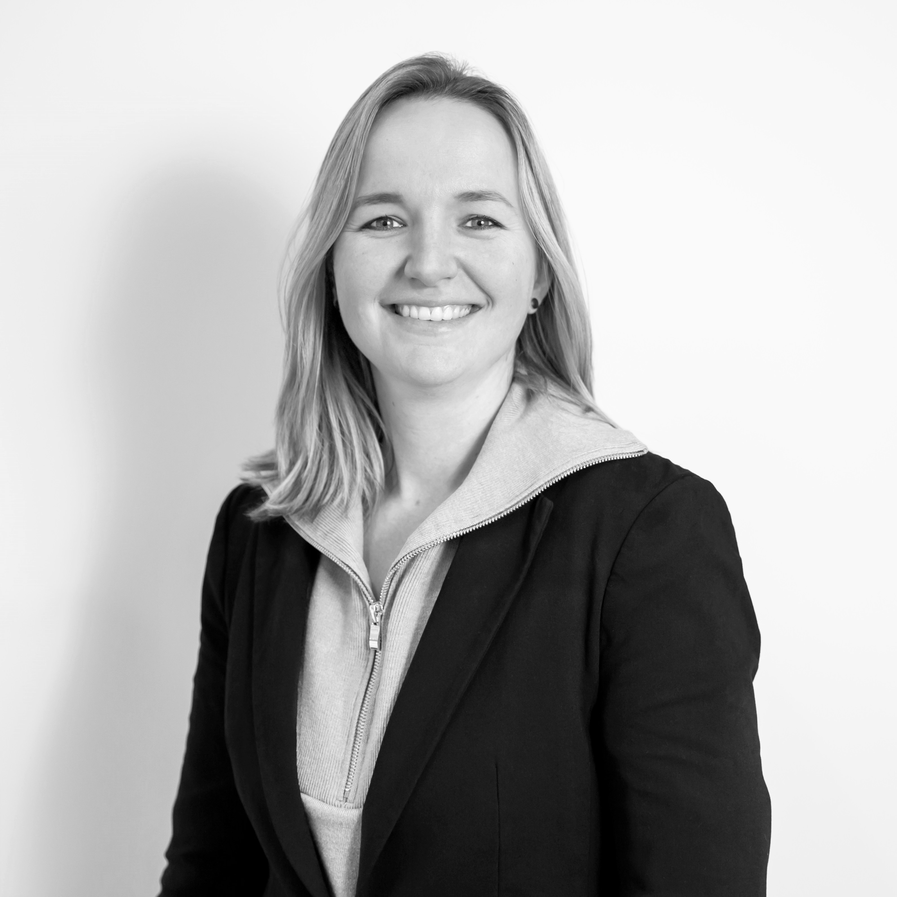

Structuur in het werk met oog voor persoonlijk contact, ruimte voor eigen keuzes en een hogere productiviteit zonder toename van werkdruk.
Om genoeg tijd te hebben voor wat belangrijk is, moeten overige taken zo efficiënt mogelijk uitgevoerd worden. Door optimaliseren van processen en digitaliseren waar mogelijk, ontstaat meer ruimte.
Het team tijd geven voor het echte werk, daar gaat het om. Dit houdt het werk leuk en uitdagend, de kosten laag en maakt groei mogelijk zonder verlies van kwaliteit en service. Haal obstakels voor een team weg, dan tonen zij hun kwaliteit.
